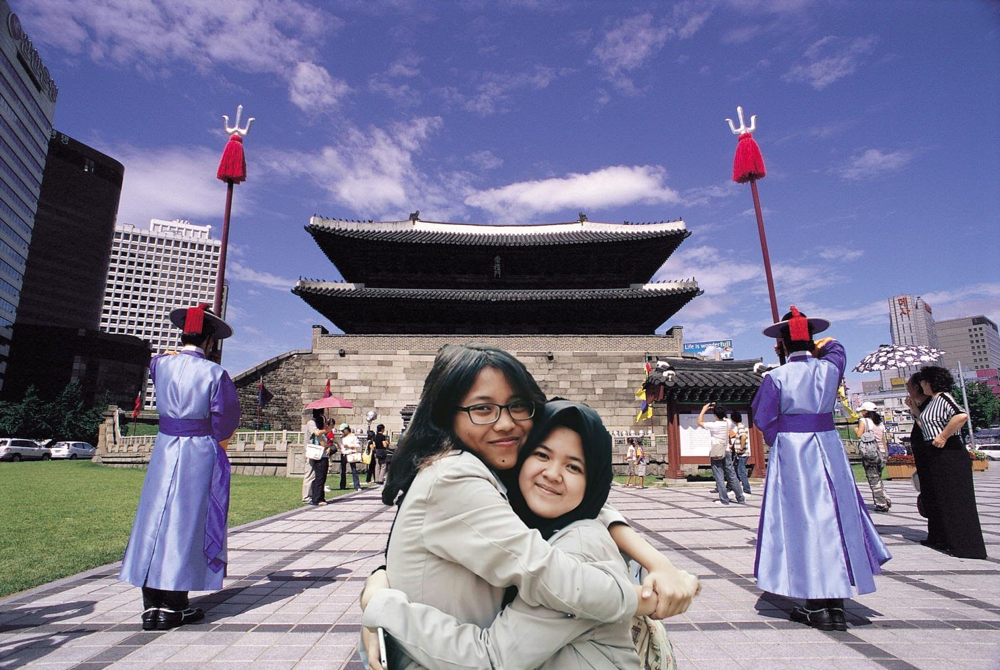

Welcome to the blog of Muti
Nama saya Siti Mutiara Insani. Saya lahir di Sukabumi, 28 Juli 2001.Golongan darah saya A dengan zodiak leo dan shio ular. Sekarang saya bersekolah di SMK-SMAK Bogor, SMAKBO adalah sekolah yang berdiri dibawah kementrian perindustrian bukan kementrian pendidikan. Kenapa saya bersekolaha disini karena saya cita-cita saya dulu adalah menjadi dokter, tapi karena saya takut jika melihat darah oleh karena itu saya ingin menjadi apoteker. Pada suatu hari, saya bertemu dengan saudara saya yang sekarang masih bersekolah di SMK Caraka Nusantara dan dia mengambil jurusan farmasi, saat itu saudara saya menyarankan saya untuk mengambil jurusan analisis kimia dibandingkan dengan farmasi karena saya tidak menyukai pelajaran menghapal dan lebih kuat dipelajaran menghitung dan dia menyarankan saya untuk bersekolah di sekolah yang sama dengan dirinya. Tapi pada saat saya mencari formulir penerimaan siswa baru SMK Caraka Nusantara jurusan analisis kimia di Google pencarian teratas yang muncul adalah SMK-SMAK Bogor, oleh karena itu akhirnya saya menjadi melihat website nya SMAKBo. Lalu akhirnya saya tertarik dengan SMAKBo dan kebetulan SMAKBo sudah membuka penerimaan siswa/i baru.
Hobi saya adalah mendengarkan musik Korea Selatan, menonton drama dan variety show Korea Selatan, makan-makan, shopping, jalan-jalan, dan menghabiskan kuota. Penyanyi dari Korea Selatan kesukaan saya adalah BIGBANG dan bias atau idola saya adalah G-Dragon, saya sedih karena pada tanggal 27 Februari 2018 ini G-Dragon akan mulai menjadi tentara aktif di wajib militer. Drama yang paling saya sukai hingga hari ini adalah Princess Hours, ini adalah drama yang membuat G-Dragon dan Seungri BIGBANG menjadi dekat saat BIGBANG pertama kali terbentuk, hingga saat ini sudah 17 kali saya menonton drama ini dan variety show yang paling saya sukai adalah Running Man dan Knowing Brother, karena sedang dalam mood terburuk seklipun saya akan selalu tertawa jika menonton dua variety show ini.
